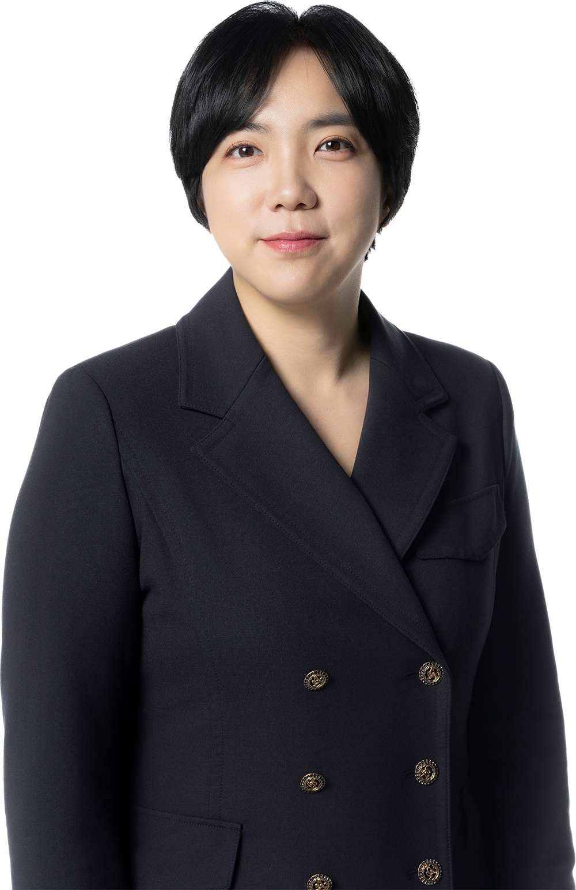

구성원

오민애 변호사
lexcum@law-yulip.co.kr학력
- 명덕외국어고등학교
- 고려대학교 법학과
- 한양대학교 법학전문대학원
경력
- 변호사시험 4회
- 법무법인 향법 소속 변호사
- 서울지방변호사회 인권위원
- 고 김용균 사망사고 진상규명과 재발방지를 위한 석탄화력발전소 특별안전조사위원회 자문위원
- 법무부 디지털성범죄 등 자문위원
- 학교법인 충암학원 임시이사
- 민주화운동기념사업회 청렴시민감사관
현재
- 민주사회를 위한 변호사모임 회원
- 직장갑질119 법률스탭
- 생명안전시민넷 법률위원
- 비정규노동자의집 ‘꿀잠’ 감사
- 4월16일의 약속 국민연대 운영위원
- 익천문화재산 ‘길동무’ 감사
- 백기완노나메기재단 감사
- 서울특별시 중부교육지원청 징계위원
- 건설근로자공제회 인사위원
- 한국보육진흥원 자문단
- 한양대학교 법학전문대학원 겸임교수
업무 사례
- 부당해고 및 부당징계 구제신청, 부당노동행위 구제신청 등 노동위원회 사건 수행
- 산업재해로 인한 피해 관련 민‧형사 사건 수행
- 반도체 사업장에서 발생한 산업재해 관련 행정소송 수행
- 직장내괴롭힘 피해 관련 민‧형사 사건 수행
- 미지급 임금 및 퇴직금 청구 소송, 해고무효확인소송 수행
- 대학교 시간강사 퇴직금 및 미지급수당 청구소송 수행
- 교통사고, 의료과실로 인한 피해 관련 민‧형사 사건 수행
- 세월호참사, 가습기살균제 참사, 10.29 이태원참사 피해자 조력 및 관련 민‧형사 사건 대리
- 성범죄 피해자 민‧형사 사건 대리
- 요양보호사, 노인생활지원사 처우 관련 민‧형사 소송 대리
- 저작권법 위반 무고 사건 대응
- 이혼 및 재산분할 청구소송 수행
- 상속재산분할심판청구, 유류분반환청구소송 등 가사 사건 수행
- 노동조합 및 비영리단체 자문
기타
- 고용노동부 연구용역 “산업안전보건조치 의무이행 강화 방안” 참여
- 사회적참사특별조사위원회 종합보고서 집필 참여
- 대한변호사협회 표창장 (2021)
- 「전국민 4대보험」(국민입법센터) 집필 참여
- 「노동판례비평」 집필(2015-2020, 2023-2024)